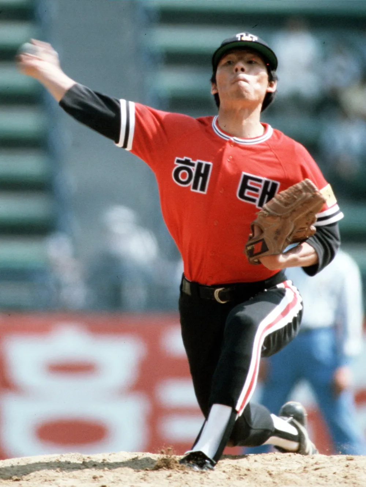
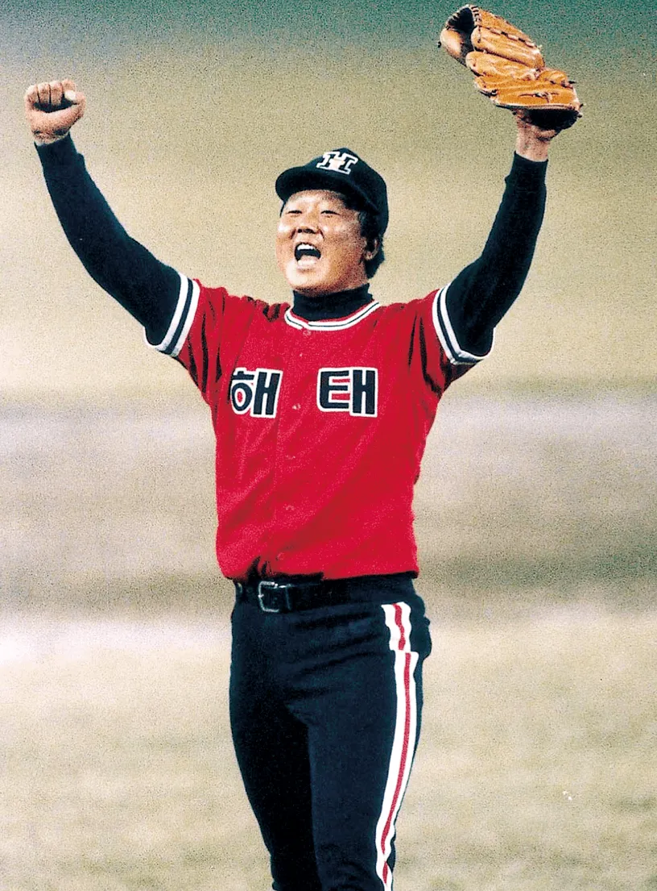
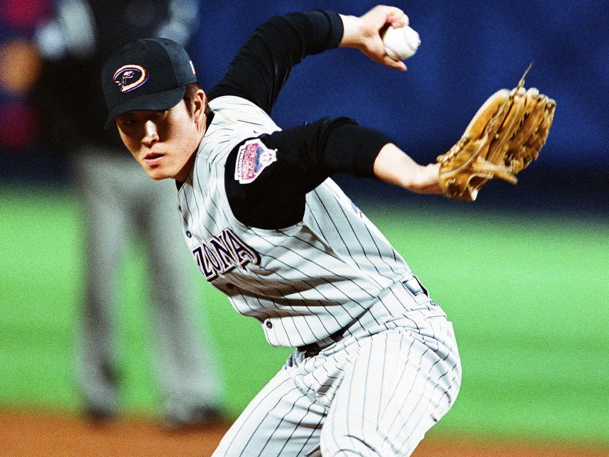

방수원이라고 해태 타이거즈 전 투수가 있는데...

타이거즈 영구결번 선수인 선동열한테 슬라이더 구종을 전수해줬는데다...

중학생 시절 언더핸드 흉내내는 메이저리거 김병현한테 제대로 언더핸드 투구폼을 가르쳐준 인물임... ㅇㅇ
그러나 방수원 선수가 전설의 타이거즈에 출연해 증언한 바에 따르면...
초등학생 시절에 방수원을 전문적으로 가르친 사람도 없었다고 함 ㄷㄷ...
결론) 자신이 혼자서 터득한걸 선동열과 김병현한테 전수해준 전설이다... ㄷㄷ
무댓?